Operating Documentation
Direction 5193575-800, Rev# 5
LightSpeed 7.X Service Information - Adv
Operating Documentation |
| Required Persons | Preliminary Reqs | Procedure | Finalization |
|---|---|---|---|
| 1 |
| Last Revised: | 27 Ocotober 2008 |
| Item | Qty | Effectivity | Part# | Manufacturer | |
|---|---|---|---|---|---|
| IMS Drive Replacement Kit | 1 | - | 5168472-2 | - | |
Raise the Table to maximum height.
Move the Cradle to IN limit position.
Remove power from Table by turning off 120VAC, Axial Drive and HVDC switches on Service Switch Panel.
| Never put the magnetic materials (ex. magnetized screwdriver)
close to the Linear Scale Tape when accessing the inside of the Table. Illustration 1: Linear Scale Tape and Magnetized Screw driver 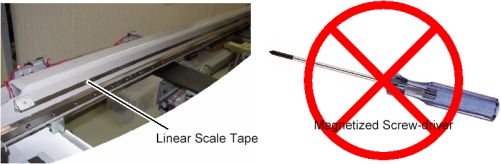 | |
Remove the Table covers in the following order.
Cradle Handle
Cradle Rear Cover
Top Cover (Right/Left)
Rear Top Cover
Rail Cover (All)
Top Plate (Front/Middle)
IMS Rear Cover
IMS Side Cover (Right/Left)
Front Base Cover
Illustration 2: Table Covers
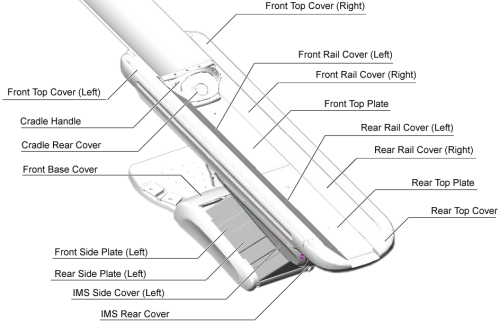
| NOTE: | Two hooks are located on the underside of the Front Top
Plate. To remove the plate, raise the front end of the plate just
a bit, and slide it toward the Gantry to release the hooks, then remove
the plate from the Table. Illustration 3: Top Plate Removal
|
Remove the pump upper cover as follows:
To make reinstallation easier, mark the position of pump upper cover on both sides by outlining the edge with a marker or pencil.
Disconnect the cable connectors of the tape switches and touch sensors.
Remove six (6) screws holding the both sides of the pump upper cover, and remove it.
Illustration 4: Pump Upper Cover Removal
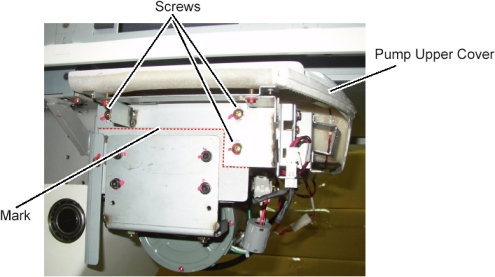
Open the side plates as follows:
Disconnect the GND cable from the side plate.
Remove 2 upper support brackets of the side plates (left) by unscrewing its 2 (x2) screws.
open the side plates as shown in illustration below.
Illustration 5: IMS Cover (Left) and Side Plates (Left) Removal
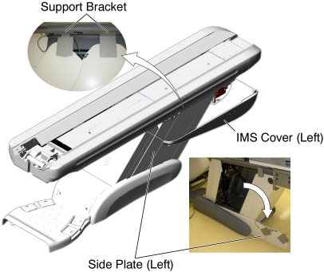
Remove all IMS Driving Covers (Front/Middle/Rear) from the Table as follows:
Move the IMS to mechanical IN limit position by hand.
Remove the IMS Driving cover (Front) by unscrewing its 2 screws.
Remove 3 screws holding the IMS Driving cover (Middle) to the Table, and slide it toward the Gantry, then remove it from the Table.
Move the IMS to mechanical OUT limit position by hand.
Remove the IMS Driving cover (Rear) by unscrewing its 2 screws.
Illustration 6: IMS Driving Covers Removal
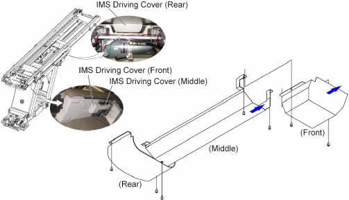
Remove the IMS motor as follows:
Move the IMS to mechanical OUT limit position by hand.
Remove the linear scale cover by unscrewing its 2 screws.
Cut any tie-wraps holding the motor wires to the Table frame.
Illustration 7: Linear Scale Cover
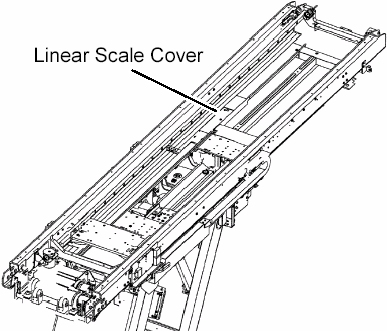
Disconnect the motor wires connector.
Loosen 2 screws to remove tension from the belt, and remove the belt from the pulley on the motor.
Unscrew the 2 screws, and remove the motor with bracket.
Illustration 8: IMS Motor Removal
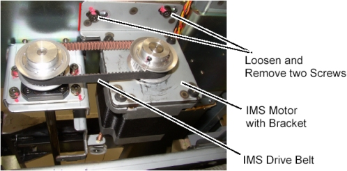
Install 3mm shim as follows:
| NOTE: | Due to the difference in size of the bearings on the new IMS bearing block, shims are needed at each connection point to ensure no interference in bearing operation. |
Verify that the IMS is near the mechanical OUT limit position.
Loosen 4 screws holding the rear IMS shaft bracket three or four turns. (If any shim is installed on the bracket, put it back into place when installing the 3mm shim.)
Move the IMS to mechanical IN limit position by hand.
Loosen 4 screws holding the front IMS shaft bracket three or four turns. (If any shim is installed on the bracket, put it back into place when installing the 3mm shim.)
Illustration 9: Location of IMS Shaft Bracket
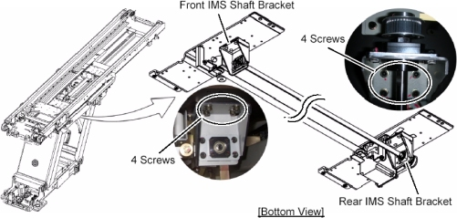
Move the IMS to mechanical OUT limit position by hand.
Loosen each screw holding the IMS bearing blocks to the IMS base.
Illustration 10: Screws of IMS Bearing Blocks
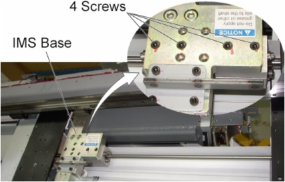
Remove 4 screws, and install a 3mm shim between the rear IMS shaft bracket and the Table frame, then hand tighten the screws. If any shim is installed on the bracket, put it back into place.
| NOTE: | The holes in the 3mm shim are not evenly centered. The portion with more space between holes and edge of shim goes to the back of the Table. |
Illustration 11: 3 mm Shims Installation (Rear Side)

Move the IMS to mechanical IN limit position by hand.
Remove 4 screws, and Install a 3mm shim between the front IMS shaft bracket and Table frame, then hand tighten the 4 screws. If any shim is installed on the bracket, put it back into place.
| NOTE: | The holes in the 3mm shim are not evenly centered. The portion with more space between holes and edge of shim goes to the back of the Table. |
Illustration 12: 3 mm Shims Installation (Front Side)
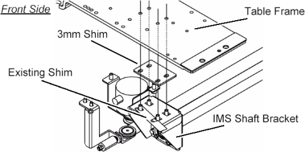
Remove two IMS bearing blocks as follows:
| NOTE: | The present configuration of two bearing blocks will be replaced by one new bearing block. |
Remove 4 screws.
Illustration 13: Bearing Blocks Disengagement
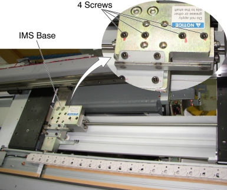
Move the IMS to OUT limit position by hand.
Illustration 14: IMS Base and Bearing Blocks
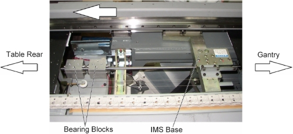
Turn up the underside of the bearing block.
Illustration 15: Underside of the Bearing Block
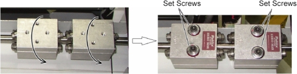
| NOTE: | Take care not to drop screws, washers or spring to the inside of Table. |
Loosen alternately two set screws of one of bearing blocks holding the bearing block to prevent falling from IMS shaft, and remove the set screws, then remove the bearing block from the IMS shaft.
Illustration 16: IMS Bearing Block Removal
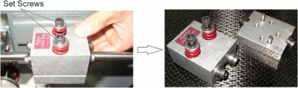
Remove the other bearing block in a similar way.
Install new bearing block as follows:
| Do not apply grease or other oils to the IMS shaft. | |
Wipe up a IMS shaft with dry paper towels or equivalent.
| Do not bring two pins on the bearing block into contact with
the IMS shaft when replacing the bearing block, because a grease is
applied to these pins. Illustration 17: Pins of Bearing Block 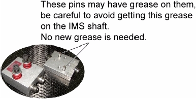 | |
Attach a new bearing block to IMS shaft, and finger tighten alternately two set screws.
Illustration 18: Bearing Block Attachment
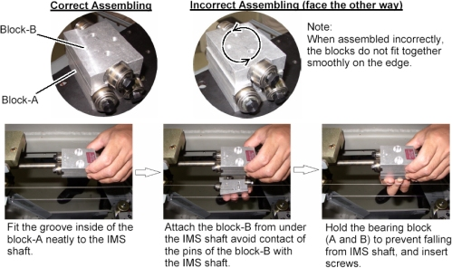
Alternately rotate the two set screws evenly, a little at a time so that there is approximately 5mm between the bottom of the washer and the base of the bearing block as illustration below. This is a preliminary tension adjustment for the bearing block and will be re-adjusted later in the procedure.
Illustration 19: Bearing Block Installation
Adjust the position of IMS shaft as follows:
Engage the bearing blocks to the IMS base as follows:
| NOTE: | The adjustment of bearing block tension is performed after completion of IMS shaft alignment. |
Put a 3mm shim on the bearing block, and move the IMS so that the IMS base is over the bearing block.
Illustration 20: New Bearing Block and 3 mm Shim
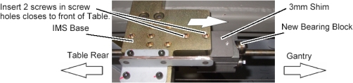
Push the bearing block against the corner of the IMS base using the hexagonal wrench, and tighten two screws (Torque: 9.1Nm / 92.8kgf.cm / 6.7lbf.ft).
Illustration 21: Bearing Block Engagement
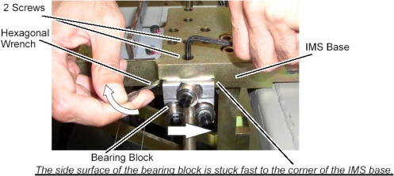
IMS Shaft Alignment as follows:
| NOTE: | The following process of loosening the ends, moving the IMS and retightening, repeatedly is designed to relieve stress on the IMS shaft by allowing to find it's true position. |
Loosen 4 screws (Screw-A) so that the rear end of IMS shaft can be slid by hand. (The screws should hold the shaft in place, but allow movement if needed.)
Move the IMS to mechanical IN limit position by hand.
Loosen 4 screws (Screw-B).
Hand-tighten the 4 screws (Screw-B).
Hand-tighten the 4 screws (Screw-A).
Illustration 22: Rear End of IMS Shaft and IMS Bracket
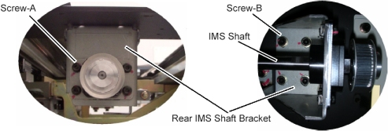
Loosen 4 screws (Screw-C) so that the front end of IMS shaft can be slid by hand. (The screws should hold the shaft in place, but allow movement if needed.)
Move the IMS to mechanical OUT limit position by hand.
Loosen 4 screws (Screw-D).
Hand-tighten the 4 screws (Screw-D).
Hand-tighten the 4 screws (Screw-C).
Illustration 23: Front End of IMS Shaft and IMS Bracket
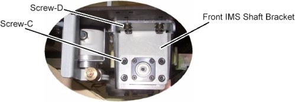
Repeat Step 12.b.i to Step 12.b.x two more times, and fix both ends of the IMS shaft bracket, screws B and D (Torque: 11Nm / 115kgf.cm / 8.1lbf.ft) and both ends of the IMS shaft, screws A and C (Torque: 7Nm / 70kgf.cm / 5.2lbf.ft).
Install new IMS motor as follows:
Install the new motor in place, and position the belt on and around the motor pulley.
Tighten the 2 screws, to fasten the motor, with tension on the belt.
Adjust belt tension according to IMS Belt Tension Adjustment.
Install the clean_damper to the IMS motor shaft.
| NOTE: | The purpose of clean damper is to absorb the vibration from IMS drive which may be increased by IMS bearing change. |
Do not position the set screws of clean_damper on each flat surface of IMS motor shaft.
Illustration 24: Clean Damper Installation
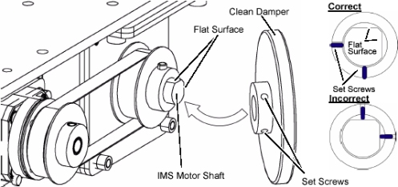
Re-connect the motor wires connector, and route the motor wires from the side edge of the Table support frame (red dotted line) as shown in illustration below, then fasten the wires to the Table frame with tie-wraps.
Illustration 25: IMS Motor Cable Wiring
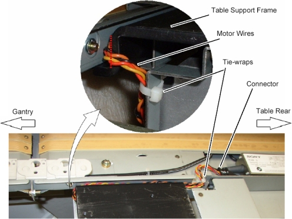
Move the IMS to mechanical IN limit position by hand, and verify that the motor wires are not caught between the IMS base and the Table support frame.
Illustration 26: Table Support Frame and IMS Base
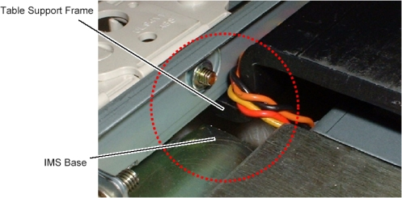
Re-install the linear scale cover.
Adjust IMS bearing block tension according to IMS Belt Tension Adjustment.
(For GT1700) Replace IMS Stopper, Sensor Bracket and Rear Touch Plate as follows:
Slide the rear touch plate away from the Gantry, to release the inside hook of the plate, and remove the touch plate.
Disconnect the GND cable from the rear touch plate.
Illustration 27: Rear Touch Plate Removal
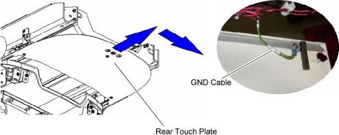
Remove 3 screws and washers from the removed rear touch plate, and transfer them to new rear touch plate.
Illustration 28: New Rear Touch Plate
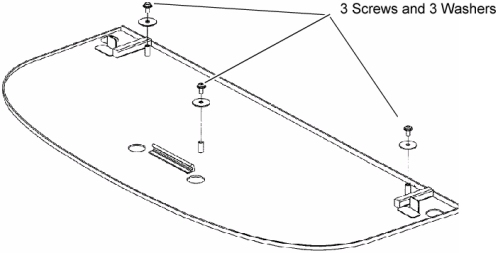
Unscrew the 2 screws, and remove the support bracket from the Table frame.
Unscrew the 2 screws, and remove the stopper from the Table frame.
Unscrew the 2 screws, and remove the touch sensor from the sensor bracket.
Unscrew the 2 screws, and remove the sensor bracket from the Table frame.
Illustration 29: Brackets Replacement
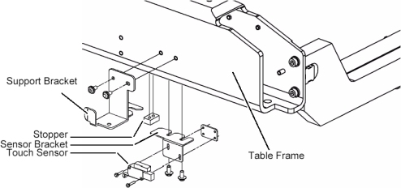
Install the new sensor bracket into place.
Attach the touch sensor to the new sensor bracket.
Illustration 30: New Sensor Bracket
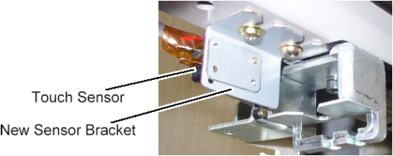
Install the new stopper into place, and push the stopper against the IMS rail, then tighten two screws (Torque: 11Nm / 115kgf.cm / 8.1lbf.ft). (The purpose of this replacement is to protect the Linear Guide.)
Illustration 31: New Stopper
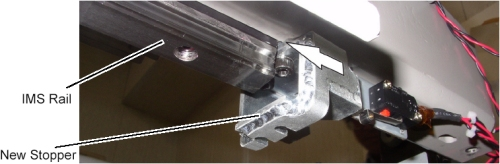
Install the new support bracket into place.
Illustration 32: New Support Bracket
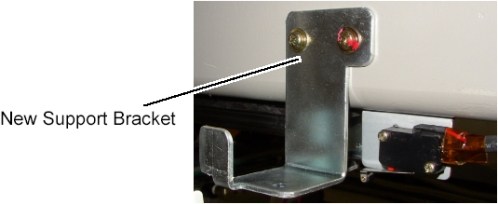
Connect the GND cable to new rear touch plate, and install it to the Table.
Illustration 33: GND Cable of Rear Touch Plate
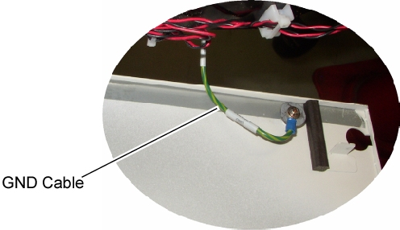
Adjust the position of the touch sensor as follows:
Loosen 2 screw of the touch sensor.
Hold down the touch sensor to activate it, and push up the touch sensor until the sensor is released, then tighten the 2 screws.
Illustration 34: Touch Sensor Positioning
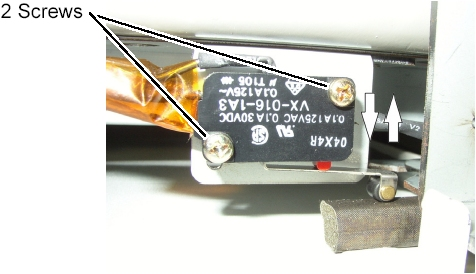
Push and free the touch plate several times, and verify that the touch sensor is operating normally.
(For GT2000) Replace the stopper as follows:
Unscrew the 2 screws, and remove the stopper from the Table frame.
Install the new stopper into place, and push the stopper against the IMS rail, then tighten two screws (Torque: 11Nm / 115kgf.cm / 8.1lbf.ft).
Illustration 35: New Stopper
Re-install the following covers:
IMS Driving Cover (Rear)
Pump Upper Cover
Power up the Table from the service Switch Panel in Gantry.
| Do not raise/lower the Table. The side plates may be damaged. | |
Move the cradle and IMS in and out completely 10 cycles and verify that table movement is operating normally.
Re-install the following covers in the following order.
IMS Driving Cover (Middle)
IMS Driving Cover (Front)
Front Top Plate
Rear Top Plate
Rail Covers
Cradle Rear Cover
Cradle Handle
Re-install the rest of the Table covers.
Raise and lower the table a couple times and verify that table movement is operating normally.